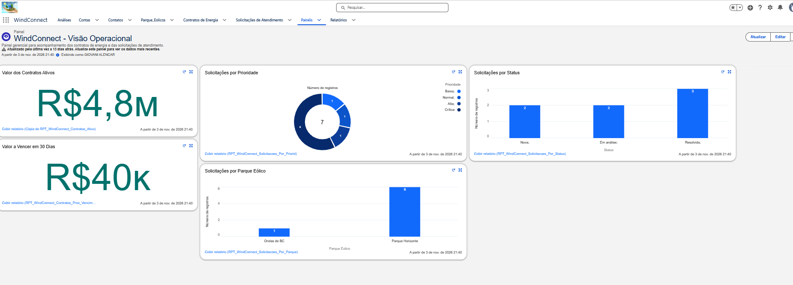

Gestão inteligente de contratos de energia e solicitações de atendimento utilizando a plataforma Salesforce CRM.
Uma solução de gestão operacional desenvolvida no Salesforce.
O WindConnect é um projeto desenvolvido para demonstrar a aplicação do Salesforce CRM na gestão de contratos de energia e no acompanhamento de solicitações de atendimento.
O projeto contempla estruturação de dados, automação de processos, regras de validação, relatórios e dashboards, buscando melhorar a organização e o acompanhamento das operações.
Principais recursos implementados no projeto.
Flows para automatização de processos, atualização de informações e definição automática de prioridades.
Ver documentação →Regras para garantir a consistência das informações e evitar registros com dados incompletos.
Ver documentação →Relatórios personalizados para análise de contratos e solicitações de atendimento.
Ver documentação →Painel operacional com indicadores de contratos, prioridades e status das solicitações.
Ver documentação →Dashboard gerencial do WindConnect.
Acompanhamento visual dos principais indicadores de contratos e solicitações de atendimento.

Ferramentas e funcionalidades utilizadas.